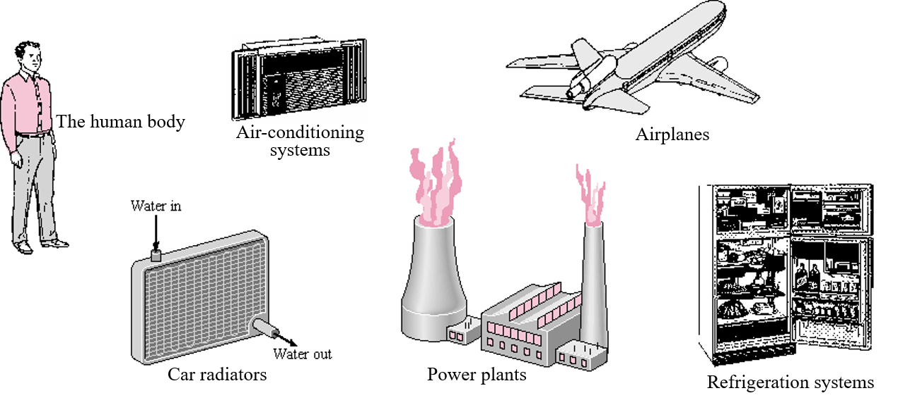
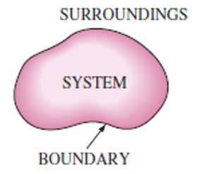
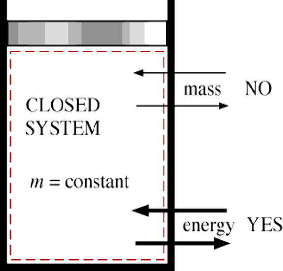
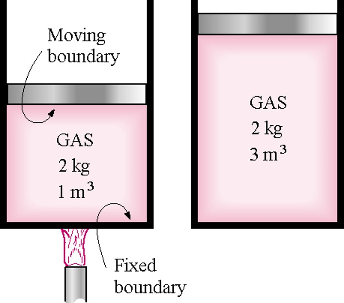
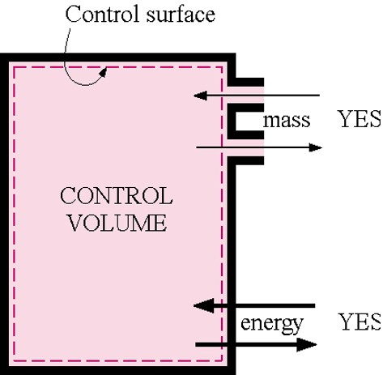
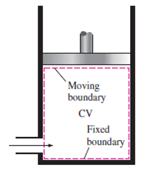
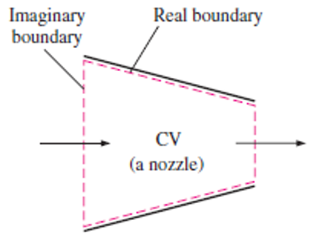

Thermodynamics can be defined as the science of energy. Although everybody has a feeling of what energy is, it is difficult to give a precise definition for it. Energy can be viewed as the ability to cause changes.
The name thermodynamics stems from the Greek words therme (heat) and dynamis (power), which is most descriptive of the early efforts to convert heat into power.
One of the most fundamental laws of nature is the conservation of energy principle.
The study of thermodynamics is concerned with ways energy is stored within a body and how energy transformations, which involve heat and work, may take place.
Approaches to studying thermodynamics
Macroscopic (Classical thermodynamics)
study large number of particles (molecules) that make up the substance in question
does not require knowledge of the behavior of individual molecules
Microscopic (Statistical thermodynamics)
concerned within behavior of individual particles (molecules)
study average behavior of large groups of individual particles
Applications of thermodynamics

Thermodynamic systems and control volume

Thermodynamic System
quantity of matter or a region of space chosen for study
Boundary
real or imaginary layer that separates the system from its surroundings
Surroundings
physical space outside the system boundary
Types of Systems
Closed
Open
closed system(fixed masses)
Systems may be considered to be closed or open, depending on whether a fixed mass or a fixed volume in space is chosen for study.
A closed system (also known as a control mass) consists of a fixed amount of mass, and no mass can cross its boundary. That is, no mass can enter or leave a closed system, as shown in Fig. 1–16.
But energy, in the form of heat or work, can cross the boundary; and the volume of a closed system does not have to be fixed. If, as a special case, even energy is not allowed to cross the boundary, that system is called an isolated system.

Mass cannot cross the boundaries of a closed system, but energy can

A closed system with a moving boundary
Open systems(control volumes)
An open system, or a control volume, as it is often called, is a properly selected region in space. It usually encloses a device that involves mass flow such as a compressor, turbine, or nozzle.
A large number of engineering problems involve mass flow in and out of a system and, therefore, are modeled as control volumes.
The boundaries of a control volume are called a control surface, and they can be real or imaginary.
A control volume can be fixed in size and shape, as in the case of a nozzle, or it may involve a moving boundary.


A control volume with real and imaginary boundaries

A control volume with fixed and moving boundaries
Isolated System
Closed system where no heat or work (energy) may cross the system boundary.
typically a collection of the a main system (or several systems) and its surroundings is considered an isolated system